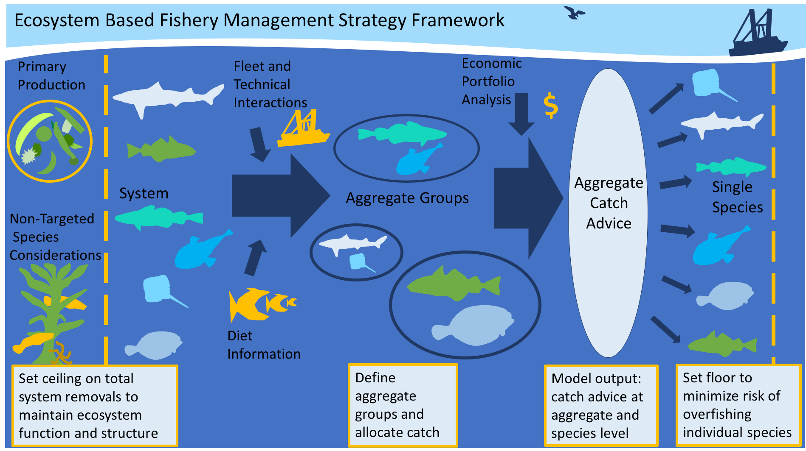
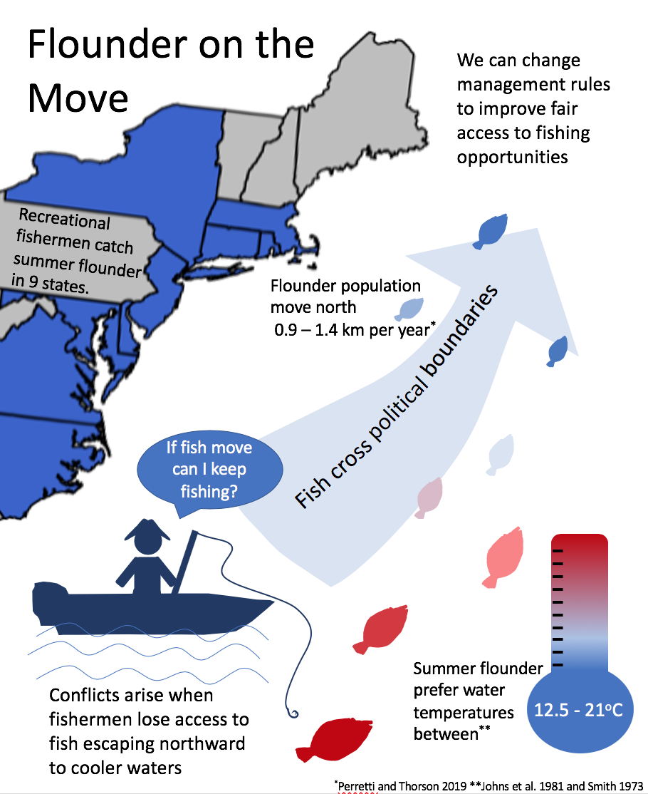
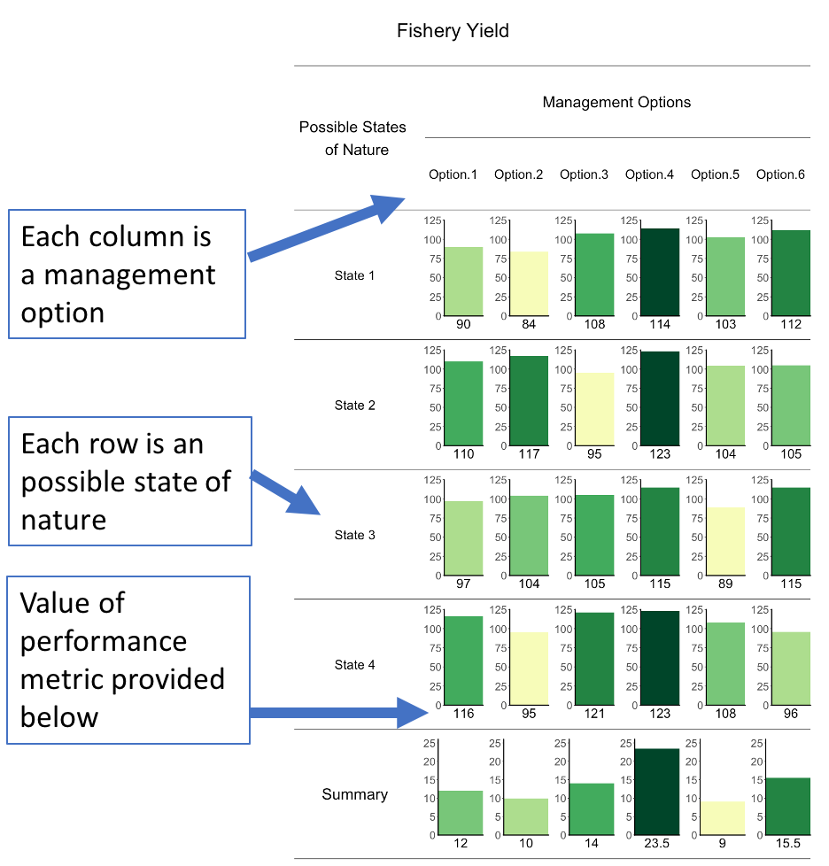

Research
My graduate research is focused on developing tools in support of Management Strategy Evaluation (MSE), a tool specifically designed to answer "what if" questions about fisheries management. MSE relies on computer and statistical models to test these "what if" management scenarios. These models go by many names but generally fall into 3 broad categories: operating models, stock assessment models, and management models. Operating models are designed to describe the marine ecosystems that we manage and the fisheries that operate within these ecosystems. Stock assessment models replicate the stock assessment process used to track fish population size over time and management models describe the different methods that might be used to regulate fishing to ensure sustainable harvests. MSE simulates the interaction between these three models to help understand the mid- and long-term impacts of different management decisions and fishing regulations, without risking the health of real-world fishery resources. Each chapter of my dissertation focuses on a different ecosystem, a different type of management method, or a different "what if" question and seeks to build tools that make these MSE studies accessible tools to support fishery management.
Testing Ecosystem-Based Fisheries Management (EBFM)

This project focused on testing combinations of EBFM methods to support development of operational EBFM in the Northeastern U.S. and to explore statistical methods that help interpret ecosystem management outcomes. This work was recently published in Fisheries Research and can be found here.
Tackling technical interactions in EBFM
In MSE studies interactions between fishing fleets that fish for the same species and/or fish in the same geographic area have often been simplified or ignored when testing new management procedures. This is problematic when fisheries have existing conflicts due to fleet interactions and bycatch concerns, because the impact of new management procedures on these conflicts cannot be tested. This study seeks to estimate the strength of fleet interactions for a multi-species fishery in the Northeastern U.S. and integrate this information into an existing MSE framework to help test EBFM in this region.
Recreational floundering in the face of climate change

Climate change is a growing concern in coastal communities dependent on fishing, as it is likely to alter the spatial and temporal availability of targeted species, and potentially the management frameworks required to maintain sustainable fishing practices. This study seeks to quantify the impact of population movement on the recreational summer flounder fishery and explore alternative management procedures that may aleviate existing and future conflicts surrounding access to this fishery.
Visualizing and communicating MSE results

A key strength of MSE is its ability to help assess trade-offs between diverse and potentially conflicting management goals. However, as the number of goals considered increases, the volume of additional quantitative output can be challenging to present in a manner that is easily interpreted by end users. This study provides a decision table visualization tool to highlight trade-offs and draws on applied examples from the recent Atlantic herring MSE conducted by the New England Fishery Management Council to demonstrate its contribution to a real-world fishery decision-making processes.